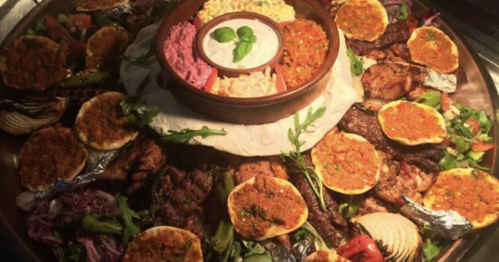

Einblicke
Galerie
Ein paar Eindrücke aus unserer Küche und unserem Restaurant.

Platte für die ganze Runde 
Mini-Lahmacun und Meze 
Gemischte Grillplatte 
Grillplatte mit frischem Brot 
Meze-Teller 
Döner mit Beilagen und Meze 
Aus unserer Auslage 
Theke und Grill 
Frischer, hausgemachter Ayran 
Unsere Teestation 
Unser Gastraum 
Unsere Terrasse